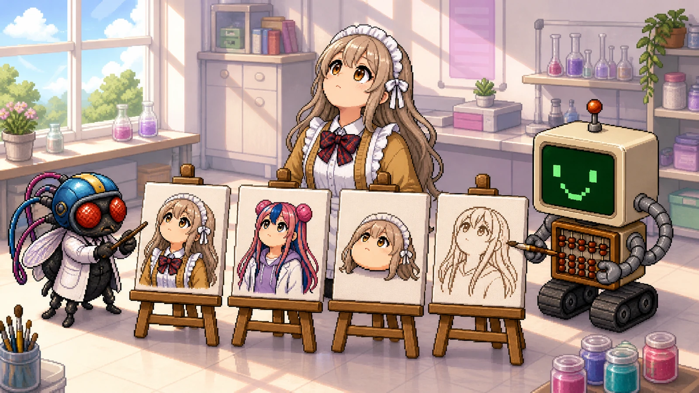
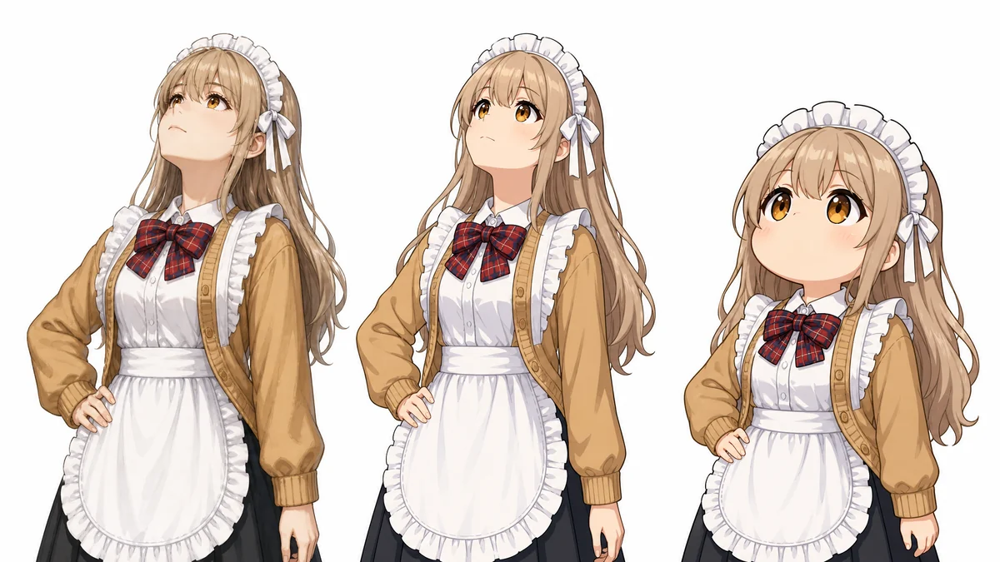
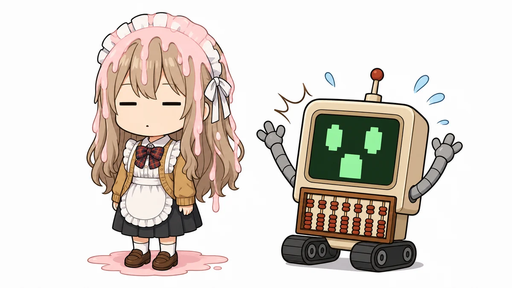
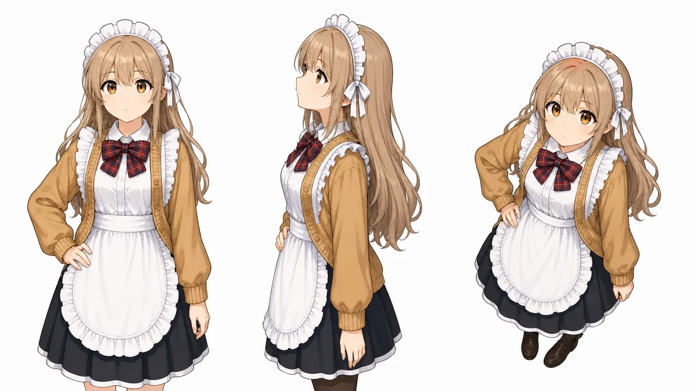
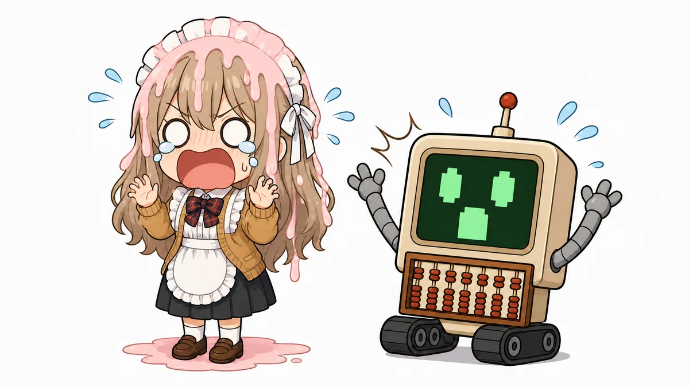
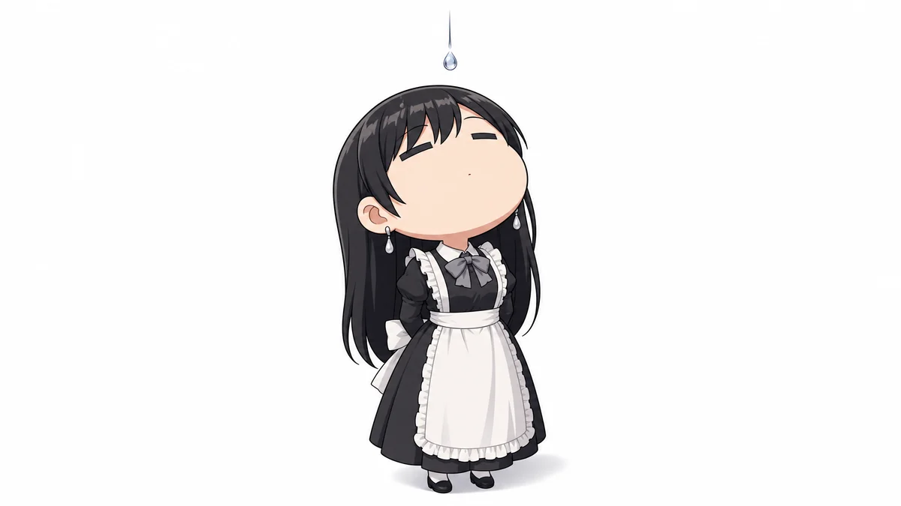

오늘의 과제

박사오늘은 모아가 천장을 올려다보는 장면이다. 여러 화풍으로 바꿔 그려 보자.

주판봇화풍마다 새로 그리면 됩니다! 실사풍 하나, 애니풍 하나, 동그라미 하나!

초파리 연구원새로 그리면 각도가 다섯 번 흔들려. 머리의 구와 턱, 눈선의 휨부터 정하고 화풍은 그 위에 얹자.

모아목이 좀 아프지만… 고개 들고 있을게요.

모델은 모아입니다. 인터넷에서 한 장면을 수많은 사람이 자기 화풍으로 다시 그리는 "올려다보기 챌린지"가 유행했습니다. 사실적인 그림부터 얼굴이 동그라미 하나인 그림까지 제각각인데, 왜 모두 같은 장면으로 보일까요?
그림 실력·코드·수식을 몰라도 됩니다. 실험을 눌러 보며 따라오세요.
올려다보기 챌린지의 그림들은 눈 크기·선·색이 달라도, 머리 기울기·턱 밑면·눈선의 휨이 같습니다
같은 노래를 발라드·록·동요로 편곡해도 멜로디가 같으면 같은 노래로 들립니다.
애니메이션 제작에서 작화감독은 여러 원화가의 그림을 고칠 때 화풍보다 먼저 머리 기울기·눈 높이·턱선 같은 뼈대를 맞춥니다. 수정 원화를 보면 선의 맛보다 위치를 고친 흔적이 더 많습니다.


화풍 막대를 움직여도 머리 기울기, 눈선의 휨, 귀 위치는 그대로입니다. 이 세 가지가 같아 모두 같은 장면으로 보입니다.
실사풍 쪽으로 갈수록 턱이 길고 눈이 작아지며, 동그라미 쪽으로 갈수록 턱이 사라지고 눈이 커집니다. 바뀌는 것은 "부위의 크기와 모양"입니다.
작업에서는 기준선 레이어를 따로 두고, 화풍마다 그 위에 새 레이어를 얹어 그립니다.

AI에게 화풍만 바꿔 달라고 했더니 모아가 정면을 보는 그림이 나왔습니다. 화풍은 잘 바뀌었는데 써도 될까요?
각도(뼈대)가 바뀌어 같은 장면이 아닙니다. "keep the exact same pose and camera angle: looking up, chin raised, seen from slightly below"를 함께 적고, 원래 그림을 첨부해 같은 대화에서 다시 요청합니다.
올려다보는 얼굴은 턱 밑면이 보이고, 귀가 눈보다 내려가며, 눈과 귀를 잇는 선이 ∩ 모양으로 휩니다

학교 수학으로 보면 — 삼각함수 — sin 30° = 0.5, sin 45° ≈ 0.71. 직각삼각형에서 빗변에 대한 높이의 비입니다.
| 식 조각 | 뜻 |
|---|---|
| 머리 반지름 | 머리를 공으로 봤을 때 반지름(이 실험은 100) |
| 고개 든 각도 | 정면(0°)에서 위로 든 각도 |
| 눈선 휨 | 눈선 가운데가 양 끝보다 솟는 높이 |

야구 모자를 쓰고 거울 앞에서 고개를 들어 보면, 챙의 곡선이 위로 볼록해지는 것이 보입니다.
3D 모델링에서는 머리에 위도선을 그려 두고 카메라를 돌려 봅니다. 손그림에서도 같은 방법으로 구에 십자선과 눈선을 그어 각도를 잡습니다.

30도를 들면 눈선 가운데가 양 끝보다 100 × 0.5 = 50만큼 솟아 ∩ 모양이 됩니다. 45도에서는 약 71입니다.
귀는 눈선 양 끝에 붙어 있으므로, 고개를 들수록 눈보다 아래로 내려갑니다. 턱 밑면(턱과 목 사이)이 넓게 보입니다.
작업에서는 구에 십자선을 그은 뒤, 고개 든 만큼 눈선을 ∩로 휘게 긋고 그 끝에 귀를 붙입니다. 각도를 내리면(음수) 반대로 ∪ 모양이 됩니다.
AI가 그린 "올려다보는 모아"에서 귀가 눈과 같은 높이에 있습니다. 괜찮을까요?
고개를 들었는데 귀가 눈 높이에 있으면 목만 꺾인 것처럼 어색합니다. 그림 위에 눈선을 ∩로 그어 귀가 그 끝에 오는지 보고, "ears positioned lower than the eyes because the head is tilted back"을 넣어 다시 요청합니다.
챌린지에서 "나는 이 각도에 면역"이라는 농담이 나온 까닭 — 단순한 얼굴은 고칠 곳이 적습니다
공은 어떻게 돌려도 동그랗게 보이고, 상자는 돌릴 때마다 보이는 면이 바뀝니다.
챌린지에서 동그라미 얼굴 그림체로 참여한 사람이 "나는 이 각도에 면역인 것 같다"고 농담한 그림이 큰 웃음을 받았습니다. 각도가 어렵다는 공통의 고생을 화풍의 단순함으로 비껴간 것이 어긋남이 됩니다.


사실풍 얼굴은 각도가 바뀔 때 턱·코·광대·귀·눈선 다섯 곳을 다시 잡아야 하고, 동그라미 얼굴은 눈·입 자리 한 곳만 옮기면 됩니다.
그래서 단순한 화풍은 어려운 각도에서 실수가 적고, 같은 장면을 빠르게 많이 그릴 수 있습니다. 대신 각도의 극적인 느낌은 약해집니다.
작업에서는 웃음 장면에 단순 화풍을, 멋진 장면에 사실 화풍을 씁니다. 1부의 등신 바꾸기와 같은 원리입니다.
AI에게 "simple round chibi face looking up"을 요청했더니 동그라미 얼굴 위에 사실적인 코와 콧구멍이 그려졌습니다. 괜찮을까요?
단순한 화풍에 사실적인 부위 하나가 섞이면 그 부위만 튀어 보입니다(웃음 의도가 아니라면 실패). "no nose, only two dots for eyes and a small line for the mouth"처럼 남길 부위를 적어 다시 요청합니다.
상황의 크기와 표정의 크기가 크게 어긋날 때 웃음이 납니다. 비슷하면 그냥 자연스럽습니다
학교 수학으로 보면 — 절댓값 — |9 − 1| = 8, |2 − 9| = 7. 수직선에서 두 수 사이의 거리입니다.
| 식 조각 | 뜻 |
|---|---|
| 상황 크기 | 벌어진 일이 얼마나 큰가(0~10) |
| 표정 크기 | 얼굴이 얼마나 크게 반응하나(0~10) |
| 갭 | 둘 사이의 거리. 클수록 어긋남이 크다 |
시험 전날 모두 허둥대는데 태연한 친구, 또는 모기 한 마리에 비명을 지르는 친구는 둘 다 웃음을 줍니다.
리액션 짤의 상당수는 데드팬입니다. 눈을 가로선 두 개로 줄이고 입을 점 하나로 그리면, 어떤 상황에 붙여도 "할 말이 없다"는 대답이 됩니다.


상황 9, 표정 1이면 갭 8로 데드팬 개그가 되고, 상황 2, 표정 9면 갭 7로 과잉 반응 개그가 됩니다.
갭이 2 이하면 "자연스러운 반응"이라 웃음보다 공감이 됩니다. 진지한 장면에는 이쪽이 맞습니다.
작업에서는 4컷 만화의 마지막 컷 표정을 이 갭으로 고릅니다. 앞 컷들이 모두 큰 반응이었다면 마지막은 무표정이 효과적입니다.

AI에게 "deadpan face"를 넣었더니 모아가 슬픈 표정으로 나왔습니다. 써도 될까요?
데드팬은 슬픔이 아니라 "감정을 안 보이는" 얼굴입니다. "completely blank expression, half-closed flat eyes, tiny dot mouth, not sad, not angry"처럼 빼야 할 감정까지 적어 다시 요청합니다.
이 부에서 배운 원리를 그림 생성 AI(Genspark 등)로 직접 확인합니다. A는 이 페이지 그림을 실제로 만든 프롬프트, B는 원리를 하나 빼거나 바꾼 비교용 문장입니다.
참고 그림 내려받기: haru_anime_base · sia_anime_base · moa_anime_base · haru_sheet · sia_sheet · moa_sheet · doctor_sheet · fruitfly_sprites_6 · jupanbot_ref_genspark_v0 · pixel_style_ref_prev_cover
모아의 같은 앙각 포즈를 세 화풍으로 받아, 뼈대가 같은지 확인합니다.
첨부: refs/moa_anime_base.png, refs/moa_sheet.png
Illustration, wide 16:9. Art style: three different drawing styles side by side, all with clean lineart on white. Match the attached reference images exactly (face, hair, colors, accessories). Moa is an adult woman in her twenties in every panel. Three panels of Moa (adult maid intern, long ash-beige wavy hair, white frilled maid headband with a white ribbon over her LEFT ear, amber eyes), wearing camel knit cardigan over a white blouse, red and navy plaid bow tie, white frilled apron, in exactly the same pose and camera angle in every panel: head tilted back about 30 degrees, looking up at the ceiling, seen from slightly below, chin raised, underside of the jaw visible, ears lower than the eyes, calm closed mouth. LEFT semi-realistic style with a longer jaw and small eyes; CENTER standard anime style; RIGHT super-deformed style with a round face, no jaw and two simple eyes. Faint pale gray construction lines (a curved eye line and a center line) visible in all three at the same place. Plain white background. No text, no letters, no numbers, no speech-bubble text, no logos, no watermark, no revealing clothing, not childlike, no school uniform, not resembling any famous anime character or real person.
Same image. Change only: draw each style from a different camera angle — left from the front at eye level, center from the side, right looking down from above. Remove the construction lines. Still no text.

실제 결과: A는 세 화풍 모두 턱을 들고 위를 보는 자세가 같아 같은 장면으로 읽힙니다. 다만 요청한 연한 기준선(∩ 눈선·가운데 선)은 그려지지 않았고, 가운데 애니풍은 고개 든 각도가 조금 약합니다. B는 정면·옆·내려다보기로 각도가 갈라져, 화풍보다 각도 차이 때문에 다른 장면처럼 보입니다.
큰일(페인트) 앞의 무표정과 옆 주판봇의 과잉 반응으로 갭을 만듭니다.
첨부: refs/moa_anime_base.png, refs/moa_sheet.png, refs/jupanbot_ref_genspark_v0.png
Illustration, wide 16:9. Art style: cute super-deformed comedy anime style, about 2.5 heads tall, clean bold lineart, flat cel colors with one soft shadow tone. Match the attached reference images exactly (face, hair, colors, accessories), simplified into the SD style. All characters are adults in their twenties (the Professor is an adult man in his thirties) drawn in a comedy SD style: adult personalities and adult outfits, not children; modest outfits exactly as described. Moa (adult maid intern, long ash-beige wavy hair, white frilled maid headband with a white ribbon over her LEFT ear, amber eyes), wearing camel knit cardigan over a white blouse, red and navy plaid bow tie, white frilled apron, standing completely still after a bucket of pale pink paint has spilled over her head (paint dripping down her hair and headband, harmless and clean-looking), with a totally blank deadpan face: flat half-closed eyes drawn as two short lines, tiny dot mouth. Next to her AbaBot (boxy beige retro CRT-monitor robot, dark green screen face with mint pixel eyes, short antenna topped with a red-brown abacus bead, gray segmented arms, small tank treads) is shocked, arms raised, screen eyes wide. Big contrast between Moa's calm and the robot's panic. Plain white background. No text, no letters, no numbers, no speech-bubble text, no logos, no watermark, no revealing clothing, not childlike, no school uniform, not resembling any famous anime character or real person.
Same image, keep the same framing. Change only: Moa screams with a huge open mouth, wide eyes and tears, just as panicked as the robot. Still no text.

실제 결과: A는 페인트를 뒤집어쓴 모아의 무표정(가로선 눈, 점 입)과 주판봇의 놀람이 크게 대비되어 갭이 또렷합니다. B는 모아도 울며 비명을 질러 둘의 반응 크기가 같아졌고, 큰일에 큰 반응이라 웃음보다 "큰일 났다"는 느낌이 앞섭니다.
이 부의 원리를 내 손으로 프롬프트에 옮겨 보는 과제입니다. 목표 → 순서 → 넣을 프롬프트 → 확인할 것 → 예상 결과 → 자주 생기는 문제 순서로 적었습니다. 결과는 매번 조금씩 다르니, 그림이 똑같지 않아도 '확인할 것'이 맞으면 성공입니다.
목표앙각 얼굴의 구조(턱 밑면, 귀가 눈 아래, ∩ 눈선)와 데드팬 표정을 한 장에 넣습니다.
왜 이 연습인가"looking up"만 적으면 AI가 턱만 들고 눈선은 일자로 두는 경우가 많습니다. 구조를 말로 적어야 각도가 삽니다.
첨부할 참고 그림: refs/sia_anime_base.png, refs/sia_sheet.png — 참고 그림은 위 직접 만들어 보기에서 내려받을 수 있습니다.
Illustration, wide 16:9. Art style: cute super-deformed comedy anime style, about 2.5 heads tall, clean bold lineart, flat cel colors with one soft shadow tone. Match the attached reference images exactly (face, hair, colors, accessories), simplified into the SD style. All characters are adults in their twenties (the Professor is an adult man in his thirties) drawn in a comedy SD style: adult personalities and adult outfits, not children; modest outfits exactly as described. Sia (adult maid intern, long straight jet-black hair, no headdress, gray eyes, small silver earrings), wearing charcoal-black long-sleeved maid dress, large gray bow at the collar, long white frilled apron, head tilted back about 30 degrees looking up at the ceiling, seen from slightly below: chin raised, underside of the jaw visible, ears lower than the eyes, the eye line curving upward like an arch. A single drop of water is falling from the ceiling right toward her forehead. Her face is completely blank and calm (deadpan): flat line eyes, tiny dot mouth. Plain white background. No text, no letters, no numbers, no speech-bubble text, no logos, no watermark, no revealing clothing, not childlike, no school uniform, not resembling any famous anime character or real person.

예상 결과시아의 턱 아래가 넓게 보이고, 귀는 눈보다 아래에 있습니다. 물방울이 떨어지는데도 눈은 가로선, 입은 점입니다.
| 문제 | 대처 |
|---|---|
| 정면을 보고 있다 | "seen from slightly below, head tilted back about 30 degrees"를 앞에 다시 적음 |
| 슬퍼 보인다 | "not sad, not angry, completely blank"를 더함 |
실제 결과: 턱을 들고 위를 보는 자세와 무표정은 나왔지만, 눈을 감은 얼굴이라 ∩ 눈선은 확인하기 어렵습니다. 반쯤 성공입니다 — 눈선을 보려면 "eyes open, flat line eyes"를 더해 다시 해 보세요.
더 해 보기고개 각도를 15도·45도로 바꿔 세 장을 만들고 눈선의 휨을 비교해 보세요(2부 2단계 실험과 맞대어 보기).

| 항목 | 주판봇 | 초파리 |
|---|---|---|
| 알아봄(모아다운가) | 7 | 8 |
| 원리(뼈대 고정·눈선 휨) | 3 | 9 |
| 웃음 | 5 | 8 |
| 합계 | 15 | 25 |


점수는 이야기 속 예시입니다. 실제 그림을 평가한 값이 아닙니다.
| 주제 | 한 줄 | 작업에서는 |
|---|---|---|
| 1단계 뼈대 고정 | 기울기·눈선·귀가 같으면 화풍이 달라도 같은 장면 | 기준선 레이어 위에 화풍 레이어 |
| 2단계 앙각 | 눈선 휨 = 반지름 × sin(각도). ∩ 모양, 귀는 눈 아래 | 구에 십자선부터 |
| 3단계 단순한 얼굴 | 부위가 적을수록 각도에 강하다 | 어려운 각도의 개그는 단순 화풍으로 |
| 4단계 데드팬 | 갭 = |상황 − 표정|. 큰일 앞의 무표정 | 마지막 컷 표정을 갭으로 고른다 |
이 페이지에 나온 개념·방법·비유·쓰임을 모았습니다. 검색하고, "설명 보러 가기"로 본문에 돌아갑니다.
지식 색인을 출처와 함께 파일로 내려받습니다. 서지 관리는 BibTeX·RIS, 온톨로지 편집은 Turtle, 그래프 도구는 CSV, 여러 페이지 합치기는 kg.json입니다.